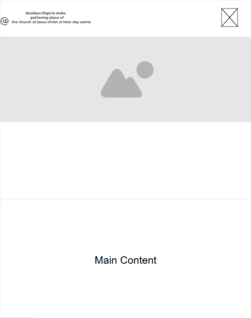
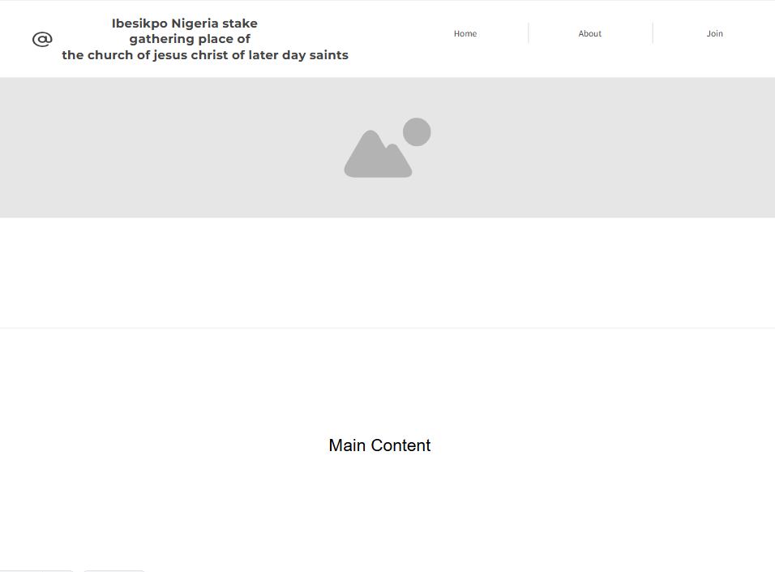

Ibesikpo Stake Gathering Place — This name directly represents the purpose and community served by the site: the gathering place of the Ibesikpo Stake. It is clear, location-specific, and spiritually significant. (Optional domain: ibesikpogathering.org)
The website will serve as a digital hub for the Ibesikpo Stake Gathering Place. It will provide information about the gathering place, leadership, ongoing courses, and a gallery of past events. Additionally, it will feature a registration form for new or interested individuals to join the gathering activities.
Mobile View:
Desktop View:
